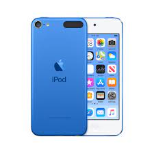

<!DOCTYPE html> 
<html> 
<head><title>Switch Case Examples</title></head> 
<body> 
<script type="text/javascript"> 
var number = prompt("Congratulations for being the winner of our 
lucky draw contest. Enter a number between 1 to 3 to collect your prize.", 0); 
switch (number) 
{ 
case (number = "1"): 
{
document.write("You have won yourself an iPhone!"); document.write("<br /> ");
} 
break; 
case (number = "2"): 
{
document.write("You have won yourself an iPod!"); document.write("<br />");
} 
	    break; 
 	   case (number = "3"): 
          {
document.write("You have won yourself an iPad!"); document.write("<br />");
    } 
	  break; 
  default: alert("Sorry, wrong value."); 
  break; 
} 
</script> 
</body> 
</html> 